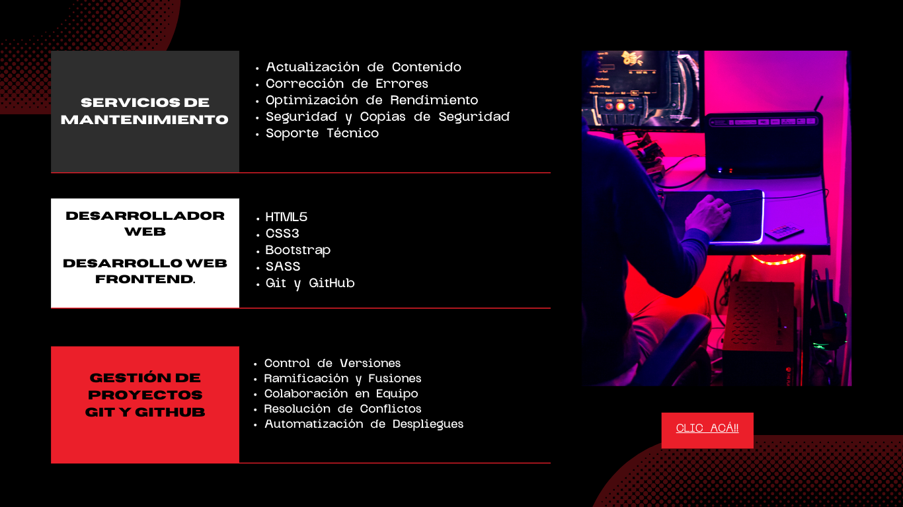

Me especializo en el mundo del Desarrollo Web
Me especializo en el Desarrollo Web
Una landing page es como tu vendedor estrella en línea . Es una página web estratégicamente diseñada para convencer a los visitantes de tomar una acción específica, para convertir visitantes en leads o clientes. Por lo general, se centra en una única oferta o llamada a la acción, con el objetivo de que los usuarios realicen una acción específica, como completar un formulario o realizar una compra..
Sirve para dirigir la atención de los visitantes hacia una oferta o acción específica. Su propósito principal es convertir a los visitantes en clientes potenciales o clientes reales al motivarlos a realizar una acción deseada, como suscribirse a un boletín, descargar un recurso, o comprar un producto. Al ser diseñadas de manera enfocada y específica, las landing pages son eficaces para aumentar las conversiones en comparación con páginas web más generales.
Sí, una landing page efectiva aumentara tus ventas al enfocarse en una oferta o producto específico, proporcionar información clara y persuasiva, motivar a los visitantes a realizar la acción deseada, como realizar una compra. Al eliminar distracciones y centrarse en la conversión, las landing pages pueden mejorar significativamente la tasa de conversión y, en última instancia, contribuir al crecimiento de las ventas .
Puedo personalizar un portafolio que destaque tus habilidades y proyectos de manera atractiva. Además, puedo diseñar landing pages impactantes para promocionar productos, creando experiencias únicas. Mi enfoque incluye currículos interactivos para resaltar tu experiencia. También puedo ayudar a establecer una sólida presencia en línea para negocios locales, ofreciendo sitios web con un diseño moderno y funcional.
Además, me especializo en garantizar que tus sitios web sean completamente responsivos, brindando una experiencia consistente en dispositivos móviles. Si tienes eventos o conferencias, puedo crear páginas que no solo los promocionen sino que también faciliten el proceso de registro. Finalmente, si estás en el ámbito educativo, puedo desarrollar plataformas y páginas web para cursos en línea. ¡Hablemos más sobre cómo puedo ayudarte a destacar en la web!